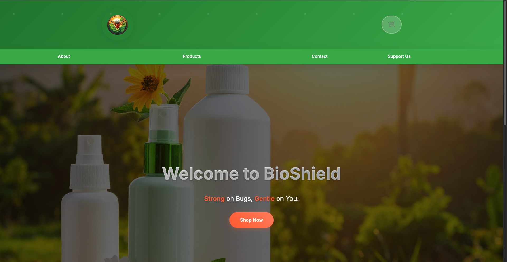
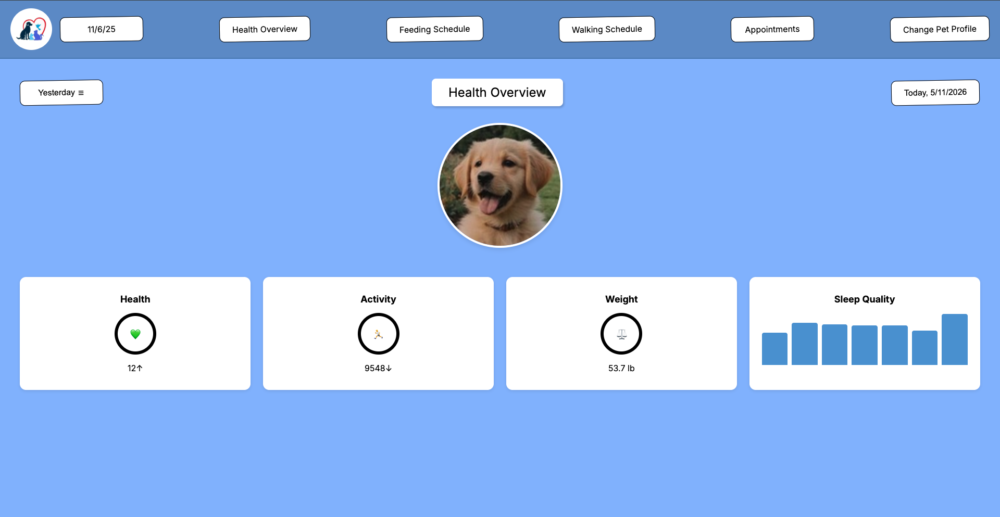
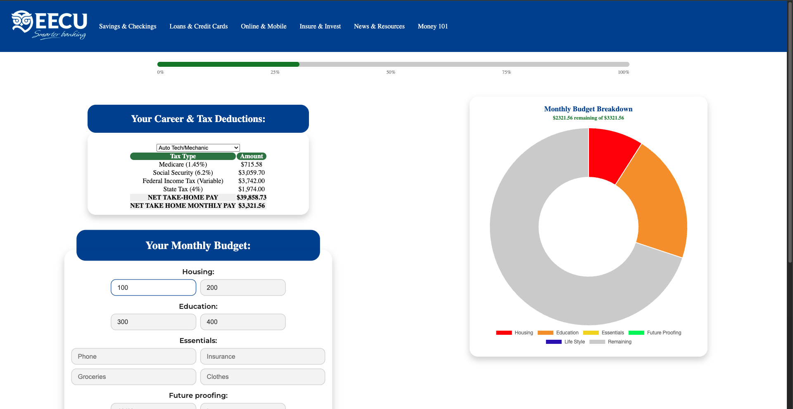

Programming Case Studies
Bioshield Website

Live Demo: View Bioshield Website →
Technology Used
HTML5, Visual Studio Code, GitHub, Netlify, Claude AI
Concepts Learned
Learned semantic HTML structure, accessibility practices, and the basics of website organization.
Challenges Faced
Struggled identifying proper semantic HTML tags and converting layouts from generic divs into accessible semantic structures.
Habits of Mind
Demonstrated persistence and investigation by researching documentation and solving problems independently.
My first website as a student at CART was my Bioshield website — a fictional bug repellent company. Because of my limited skills in CSS and JavaScript at the time, the site was coded with the assistance of AI. I utilized HTML5 and Claude AI to help design and structure the project.
For tools, I used Visual Studio Code as my code editor and Git/GitHub for version control and accessibility at home and school. I published the site using Netlify for its performance and ease of use.
During this project, I focused heavily on HTML5 and semantic HTML5 structure. As this was my very first step into web development, starting with the fundamentals was essential. Learning semantic layout was especially important to ensure the final product was accessible to everyone, regardless of disabilities.
Over the course of this project, I encountered consistent challenges, mainly finding the correct semantic HTML tags. I often designed layouts with generic divs and then had to go back and replace them, which was time-consuming. To overcome this, I utilized W3Schools and read through official documentation to find the appropriate tags. My habits of mind for this project were to investigate and persist. Instead of relying completely on AI, I pushed through by researching and solving problems independently.
PawPal Website

Live Demo: View PawPal Website →
Technology Used
HTML5, CSS3, JavaScript, Figma, GitHub, Netlify
Concepts Learned
Learned responsive design, CSS animations, wireframing, and team collaboration.
Challenges Faced
Struggled adapting layouts to different screen sizes and learning Figma.
Habits of Mind
Used communication and collaboration while balancing responsibilities with a project partner.
My second website at CART was the team-made PawPal website — a real-time pet wellness tracker where users can track appointments, create feeding schedules, and monitor various patterns about their pet.
For this project I utilized HTML5, CSS3, Vanilla JavaScript, and AI assistance for JavaScript. This was the first project where I developed my own CSS instead of relying entirely on AI, though I still used AI for JavaScript help.
As with Bioshield, I used Visual Studio Code, Git/GitHub, and Netlify. Building on my previous project, I learned and mastered new concepts including responsive design and Figma prototyping (keyframes, low-fidelity and high-fidelity wireframes).
Challenges included adapting layouts to different screen sizes and learning Figma. I resolved the responsive issues by using CSS techniques to change background colors based on screen size to visualize breakpoints. For Figma, I researched documentation and watched YouTube tutorials.
My habits of mind for this project were collaboration and communication, as I worked with a partner I didn’t choose. I made sure to pull my weight and keep communication clear to balance workloads effectively.
EECU Budget Calculator

Live Demo: View EECU Budget Calculator →
Technology Used
HTML5, CSS3, JavaScript, Chart.js, GitHub, Netlify
Concepts Learned
Learned DOM manipulation and how to implement real-time charts using Chart.js.
Challenges Faced
Struggled configuring Chart.js categories and dynamically updating data.
Habits of Mind
Demonstrated persistence and investigation by researching documentation and debugging chart issues.
My most recently completed project at CART was the EECU Budget Calculator — a real-time budget tool where users select their occupation and the site automatically calculates government taxes. Users can also input financial information and receive an automatically formatted budget.
I built this project using HTML5, CSS3, and Vanilla JavaScript, with AI used only for clarification. I continued using Visual Studio Code, Git/GitHub, and Netlify.
This project helped me master new skills, most notably implementing Chart.js for real-time updating charts and DOM manipulation to pass user input from HTML into the charts.
The biggest challenge was getting Chart.js to display correctly with my category configurations. I solved this by referencing a previous Chart.js assignment as a working example and studying how it was built. This experience strongly reinforced my habits of mind — especially investigate and persist. I pushed past the difficulty instead of settling for the minimum, which I’m very proud of.
Writing Case Studies
Frankenstein Constructed Response
This writing assessment improved my critical thinking and time management skills. During a timed writing session, I had to quickly organize ideas, stay focused, and commit to one strong argument without second-guessing myself.
While attending CART, I took Honors English 11. Our first major unit was on Frankenstein. We were given 40-minute timed constructed responses to demonstrate our understanding of the book.
This particular response stands out because it showed clear improvement in my comprehension, critical thinking, and overall writing skills. The time constraint created mental challenges — I kept second-guessing my ideas and wanted to erase and rewrite, but I didn’t have time. The solution was simple but difficult: stick with my answer. I committed to one strong route and poured all my knowledge into it. The result was an “A” grade.
My key habits of mind during this assessment were to initiate and persist. Starting quickly under pressure was the hardest part, and persistence kept me moving forward with my ideas.
Final Research Paper
This project focused on animal enrichment and required extensive research, source evaluation, and communication with zoos. Through this project, I strengthened my investigation skills and ability to manage long-term assignments.
For my first semester English final at CART, I created my own research question: “Does sensory enrichment promote cognitive stimulation and reduce signs of boredom or frustration in captive animals?” and “What role do sensory enrichments play in an animal’s wellbeing?”
This topic was chosen because our web design class was collaborating with other classes to build prototype apps for the Fresno Chaffee Zoo. We emailed various zoos for information, but responses were limited due to the Christmas season — a major challenge. When zoo responses didn’t come through, I relied on strong secondary sources as backup.
The paper ended up being three pages (excluding works cited) and I earned an A-. This was especially rewarding because I was balancing two AP classes and Honors English at the same time. My habits of mind for this project were investigate and initiate — I had to thoroughly research sources and proactively reach out to zoos for primary information.
I’m proud of this paper and excited to continue growing as a writer.